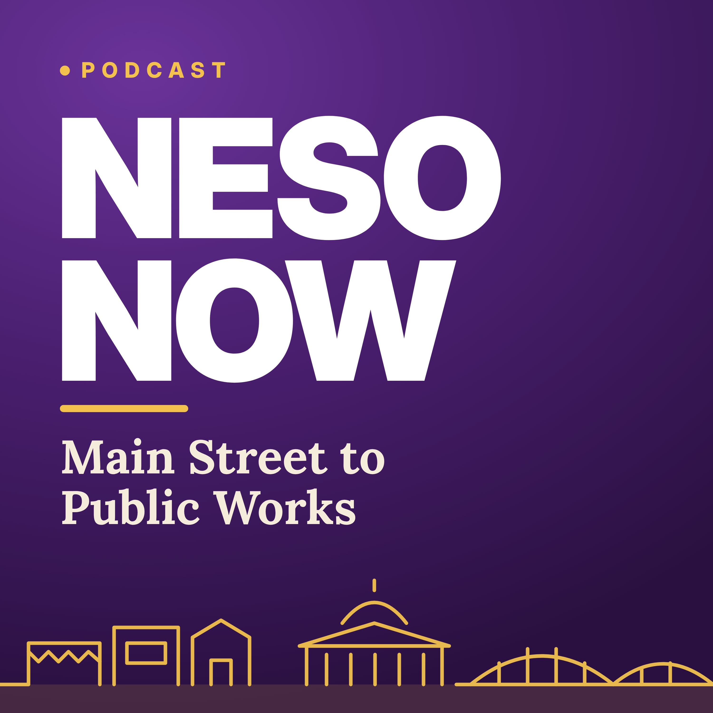

The NESO podcast
NESO Now: Main Street to Public Works
Grants, public bids and the money behind main street, explained plainly for small businesses, contractors, nonprofits and towns.
Copy the feed address into any podcast app: https://nesohq.com/podcast/feed.xml

Episodes
The first episode is on its way. Until then, the NESO Brief's free letter is at brief.nesohq.com.
About the show
Episodes start as the NESO Brief's free letter, read in full as published, with each chapter marked. The voice is computer-generated. The issue as published at brief.nesohq.com governs, and each episode is dated, so check any deadline against the current notice.
Free from NESO: NESO for Contractors (open public bids, state by state) and free resources.
Nothing here is legal, tax, engineering or investment advice.